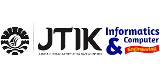

Jurusan Teknik Informatika dan Komputer di bawah naungan Fakultas Teknik Universitas Negeri Makassar ini merupakan jurusan pertama dengan nomenklatur Jurusan Teknik Informatika dan Komputer dalam lingkungan Fakultas Teknik UNM. JTIK berada dalam lingkungan Fakultas Teknik bersama 6 Jurusan lainnya. Kampus JTIK FT UNM berada dalam kompleks Fakultas Teknik Universitas Negeri Makassar berlokasi di Kampus UNM Parangtambung. JTIK merupakan salah satu jurusan yang memiliki mahasiswa terbanyak dalam lingkup Fakultas Teknik UNM. Visi Jurusan Teknik Informatika dan Komputer adalah Sebagai Pusat Pendidikan, Pengkajian dan Pengembangan Ilmu Pengetahuan Bidang Komputer dan Informatika yang berwawasan Teknopreneur yang Unggul di Kawasan Indonesia Timur Tahun 2025.
Usaha-usaha yang dilakukan Jurusan Teknik Informatika dan Komputer dalam rangka mencapai tujuan dilakukan dengan konfrehensif dan menyeluruh dari 3 aspek tridarma perguruan tinggi. Usaha tersebut adalah: (1) meningkatkan kompetensi lulusan dan melakukan upaya percepatan masa studi mahasiswa; (2) meningatkan kualfikasi dosen dan intensitas pembimbingan kepada mahasiswa; (3) meningkatkan jumlah penelitian, pengabdian masyarakat dan publikasi ilmiah dosen; (4) meningkatkan jumlah industry yang bekerjasama dengan program studi yang difasilitasi oleh fakultas; (5) peningkatan peran serta mahasiswa dalam berbagai kegiatan; (6) peningkatan sarana dan prasana penunjang akademik.
Silahkan klik link disini untuk mengakses Artikel.
| Hari | Waktu | Mata Kuliah | Ruangan | Dosen | |
|---|---|---|---|---|---|
| Pengampuh | Mitra | ||||
| Senin | 10.05 - 12.40 | Jaringan Komputer | Lab Jaringan | Dr. Eng. Ir. Jumadi M Parenreng, M.Kom., IPM. | Aulyah Zakilah Ifani, M.Kom. |
| Selasa | 07.30 - 10.05 | Kecerdasan Buatan | Teknol 1F | Dr. Iwan Suhardi, ST., MT. | Dyah Darma Andayani, ST.,M.Tel.Eng. |
| 13.10 - 14.50 | Profesi Kependidikan | Teknol 1D | Prof. Dr. Ir. Riana Tangkin Mangesa, MT. | Dwi Rezky Anandari Sulaiman, S.Psi., M.Si. | |
| Rabu | 07.30 - 10.05 | Struktur Data | Lab Sistem Cerdas | Dyah Vitaloca, ST., M.Pd. | Muh. Akbar, S.Pd., M.Pd. |
| 14.50 - 17-50 | Keamanan Komputer | Lab Programming | Dr. Eng. Ir. Abdul Wahid, ST., M.Kom., IPM. | Aulyah Zakilah Ifani, M.Kom. | |
| Kamis | 10.05 - 12.40 | Strategi Pembelajaran | Lab Animasi | Dr. M. Rais, S.Pd., M.P., M.T. | Dr. Ir. Yasdin, S.Pd., M.Pd., M.Sc., IPM. |
| 13.10 - 15.40 | Pemrograman Web | Lab Pemrogramming | Alifya Nfh, S.Pd., M.Pd. | Muhammad Fadhil Supriadi, S.Pd., M.Pd. | |
| Jumat | 13.10 - 14.50 | Inovasi Teknologi | Teknol 1C | Dr. Ir. Yasdin, S. Pd., M.Pd., M.Sc., IPM. | M. Miftach Fakhri, S.Kom., M.Pd |
Silahkan klik link disini untuk mengakses Buku Tamu.